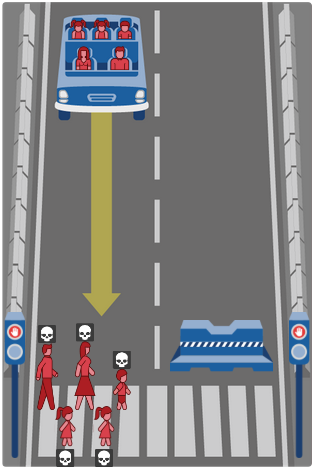

Моральный выбор это вынужденный выбор между несколькими аморальными деяниями, уровень аморальности которых трудно сравнить. В случае автопилота существование морального выбора требует выполнения следующих условий:
Ситуация должна быть реалистичной, т.е. должна быть ясная предыстория её возникновения. Нет смысла обсуждать ситуацию которая не может возникнуть.
Должен быть выбор - должно быть как минимум два варианта действий. Вариантами тут можно считать только равноценные альтернативы - очевидно что «выбор» давить виновника ДТП или случайного человека это не выбор, или выбор поцарапать одного или задавить другого это тоже не выбор. Выбор, например, должен быть между двумя невиновными при сравнимом ущербе для них. Т.е. не должно быть возможности осуществить выбор по внеморальным критериям.
Результат выбора каждого варианта должен быть предсказуем, максимально однозначен. Будущее неизвестно, а выбирать можно только опираясь на достаточно высокую уверенность в нём, что скорее всего невозможно на практике. Т.е. по сути надо полностью контролировать ситуацию во всех вариантах. Проблема вагонетки как пример ситуации в которой достаточно точно известен результат любого решения.
С реалистичностью ситуаций есть большие проблемы, обычно приводят примеры в духе «представьте, что вы идёте по пустыне и вдруг из-за угла танк», т.е. приводят ситуацию, которая якобы есть в данные момент, но не поясняют как она возникла. А если начать разбирать, то оказывается, что ситуация возникнуть не могла - либо скорость должна быть меньше, либо никто на дорогу незаметно выскочить не смог бы и т.д. и т.п.
Условно реалистичной является ситуация описанная в тесте Moral Machine от MIT.

Но и в ней не всё гладко. Во-первых, самый логичный вариант в описанной ситуации это прижаться к ограждению пытаясь погасить скорость, одновременно сигналя, тем самым давая пешеходам время пройти дальше по переходу. Изображённый переход находится либо в городе, где скорость ограничена достаточно сильно, либо на скоростной трассе, где тормозить автопилот должен был начать заранее и узнать что тормоза поломаны. В обоих случаях у него должно быть больше времени на гашение скорости об ограждение и распугивание пешеходов сигналом. Как видим реалистичность ситуации уже рассыпается на глазах. Во-вторых, вся ситуация опирается на отказ тормозов, это и сейчас достаточно редкие ситуации, а никто не мешает повысить надёжность тройным резервированием и сделать самодиагностику так, чтобы машина просто не ехала с неисправностями тормозов.